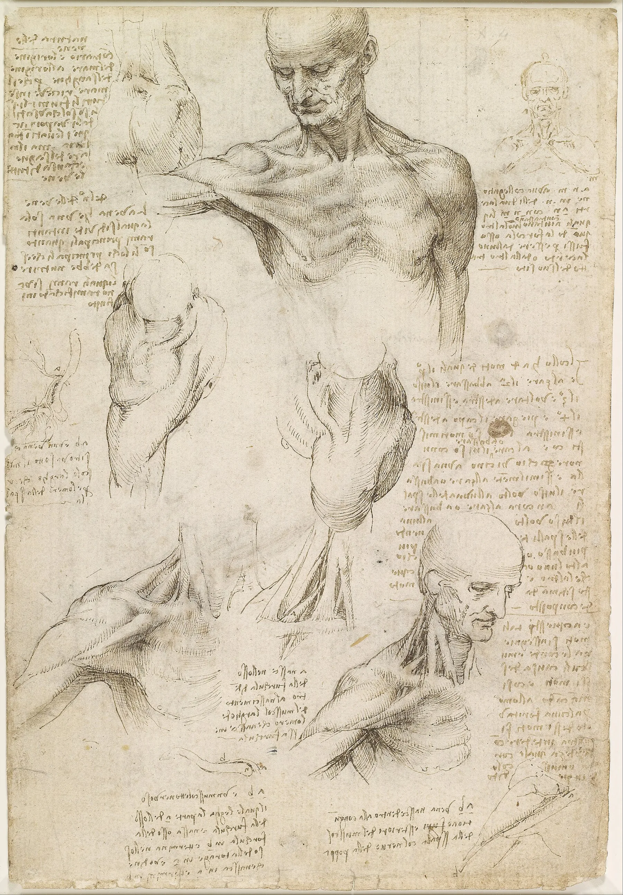
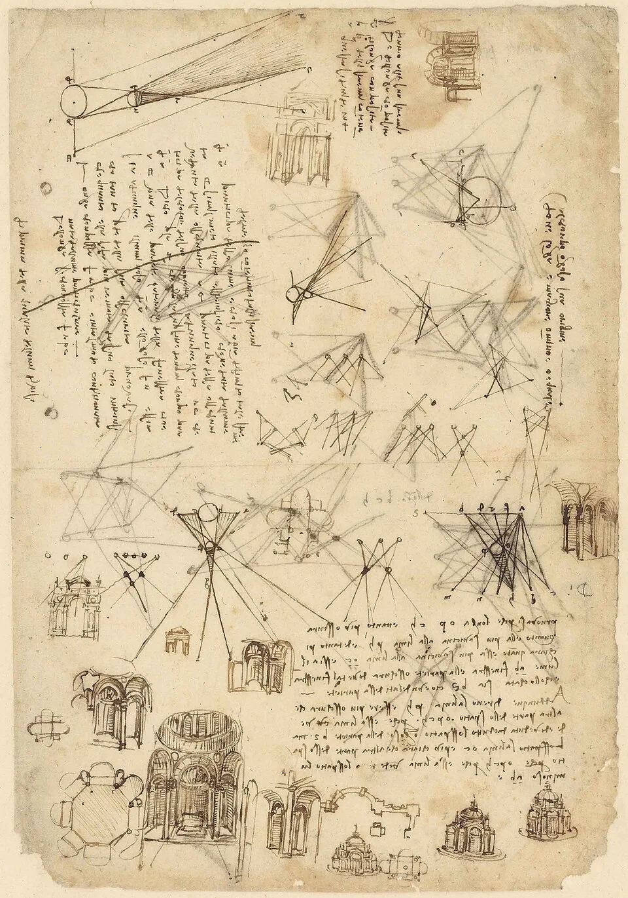

CARGO ATUAL
Analista de Suporte de TI Jr.
Atuação atual em suporte de TI, infraestrutura e resolução de problemas em ambiente corporativo, com foco em continuidade, atendimento técnico e operação.
SUPORTE DE TI · REDES · INFRAESTRUTURA · AUTOMAÇÃO
Tecnologia aplicada a sistemas que precisam funcionar.
Analista de Suporte de TI Jr. na Minsait / Indra Company. Minha experiência passa por redes, NOC, infraestrutura corporativa, automação e desenvolvimento de soluções web.

ABSobre o trabalho
Sou estudante de Engenharia de Software e trabalho entre a operação, a infraestrutura e o desenvolvimento de soluções. Gosto de entender o problema inteiro antes de escolher a ferramenta.

Onde trabalho e onde trabalhei
CARGO ATUAL
Atuação atual em suporte de TI, infraestrutura e resolução de problemas em ambiente corporativo, com foco em continuidade, atendimento técnico e operação.
EXPERIÊNCIA ANTERIOR
Experiência com GPON, EPON, OLT, ONU, Zabbix, IXC, Proxmox, VPN, troubleshooting de redes, infraestrutura corporativa e suporte N2/N3.
Além do trabalho
Formação acadêmica e pesquisa aparecem aqui como contexto — separadas da experiência profissional e dos projetos de software.
Desenvolvimento de software, administração de sistemas, redes, bancos de dados, web design, DevOps e segurança da informação.
formação concluídaGraduação em desenvolvimento de sistemas, requisitos, arquitetura, banco de dados, algoritmos, IA, redes e metodologias ágeis.
formação atualEstudo de dados públicos de radioastronomia com Python, processamento de sinais, automação, correlação de observações e identificação de padrões.
pesquisa em andamentoProjetos em destaque
Projetos desenvolvidos em contextos reais de operação, educação, produto e automação — com decisões técnicas, colaboração e resultado mensurável.
Automação criada no NOC para cruzar logs, ranges TCP e JSON do roteador. Encontrou um spike de 593 ocorrências em um único IP privado.
ver repositório público ↗EdTech gamificada para hortas escolares, construída com Larissa Rangel durante o Ignite Brasil. Aluno, professor e escola compartilham um mesmo sistema de acompanhamento.
co-criação com Larissa RangelWebGIS para prever, consultar e visualizar passagens de satélites sobre locais escolhidos, combinando mapas e dados orbitais.
ver projeto no GitHub ↗Vamos conversar
Estou aberto a oportunidades em suporte, redes, infraestrutura, NOC, automação e desenvolvimento de soluções.